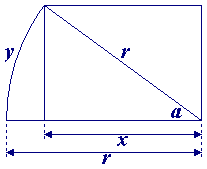

x = r - 1/(2×pi)
en
cos(a) = x / r = (r - 1/(2×pi)) / r
en, wanneer we a in radialen nemen,
y = (a / (2×pi)) × (2×pi×r) = a × r.

Omdat r=3476000 meter, kunnen we uitrekenen dat y ongeveer 1052 meter is,
hetgeen de afstand is die de kabel ten noorden van de evenaar gelegd zou moeten worden
om het tekort van 1 meter kabel op te lossen.
 terug naar de puzzel
terug naar de puzzel